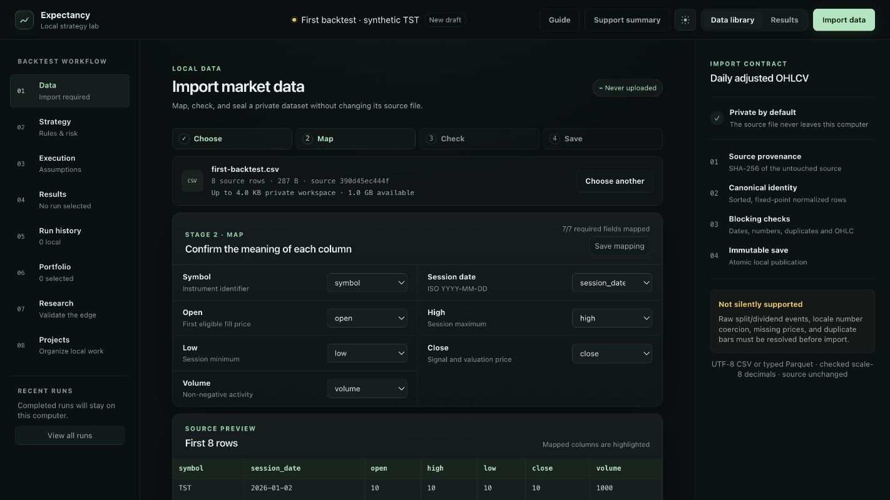
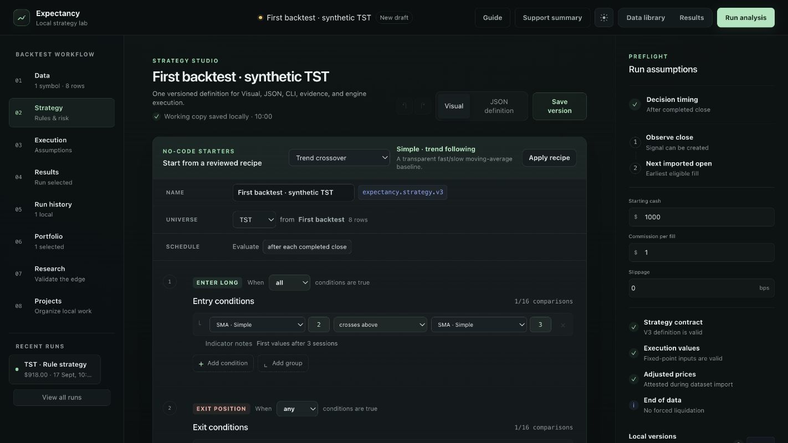
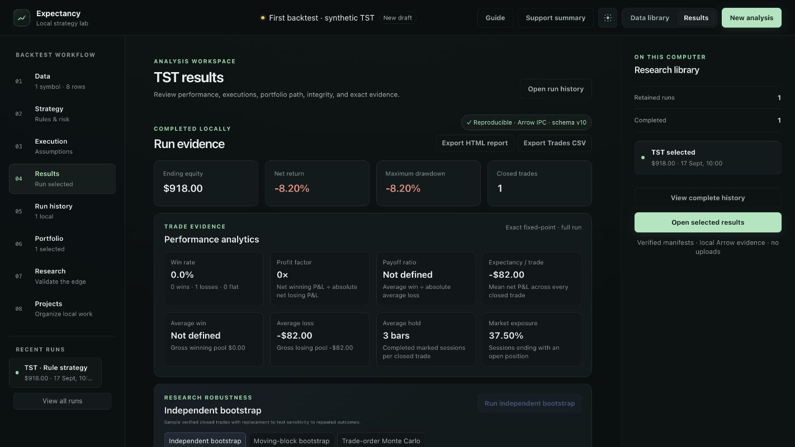

PREPARATION
A small example you can check.
You need the desktop app and the sample CSV below. No market-data subscription, research account or Python setup is needed for this visual-editor walkthrough. See downloads and installation for package availability.
TST is an invented instrument. The prices were constructed to produce a crossing entry and exit. One losing trade demonstrates accounting; it provides no evidence of predictive value.
The observations are synthetic. Numerical outputs have been checked against the simulation engine; no market performance is implied.
01 / DATA
Make each column explicit.
Choose Import data → Choose data file and select first-backtest.csv. Confirm the seven mappings below; these headers should be detected automatically.

↗ Expand| CSV header | Map to | Meaning |
|---|---|---|
| symbol | Symbol | TST on every row |
| session_date | Session date | ISO date, 2026-01-02 to 2026-01-13 |
| open / high / low / close | Corresponding OHLC field | Four distinct price columns |
| volume | Volume | 1,000 units per session |
The synthetic series contains no splits or dividends. Confirm the adjusted-price declaration for this sample, choose Check dataset, then Create dataset. Expect eight valid rows and one symbol. For real data, establish the provider’s adjustment policy before making that declaration.
02 / STRATEGY
Two crossing conditions.
In Strategy, use the visual editor to set the entry and exit below. Use a long-only strategy with fixed quantity 10. Disable stop loss, trailing stop, take profit and time exit for this experiment.

↗ ExpandUse crosses above, not is above. A crossing compares the current relationship with the previous completed bar. SMA windows refer to observations, not elapsed calendar days. You can also paste the supplied strategy document into the JSON editor.
03 / EXECUTION
A signal is not a fill.
In Execution, set starting cash to 1,000, commission to 1 per fill and slippage to 0 bps. Use market orders, the full dataset and next-imported-open execution. Leave additional liquidity, shorting and advanced execution models off. Review any zero-slippage warning before running.
- 07 JAN · AFTER CLOSEEntry signal
SMA(2) = 10; SMA(3) ≈ 9.6667.
The crossing submits a buy order. - 08 JAN · OPENBuy 10 at 13
130 notional + 1 fee.
Cash becomes 869. - 12 JAN · AFTER CLOSEExit signal
SMA(2) = 8.5; SMA(3) = 10.
The crossing submits a sell order. - 13 JAN · OPENSell 10 at 5
50 proceeds − 1 fee.
Cash becomes 918.
Zero slippage is a simplifying choice for arithmetic, not an estimate of real execution costs. The gap between the signal close and the next open is still present in the input prices.
04 / EVIDENCE
Reconcile the result.
Choose Run analysis, then inspect Results. You should have one closed trade, two fills and no open position. In the evidence tables, compare the fill dates and quantities with the timeline above.

↗ Expand1,000 − 82 = 918 ending equity · −8.20% net return
Read the ledger as well as the chart: the purchase moves cash into inventory; the sale reverses it. Commissions reduce equity on each fill. The result is not annualized, and the short sample is unsuitable for estimating stable risk-adjusted performance.
CHECK YOUR WORK
If your result differs.
No trade, or more than one trade
Confirm TST, the full eight-row interval, SMA windows 2 and 3, and crossing operators. Remove extra conditions and short-entry rules. Do not use a longer moving-average recipe on this tiny sample.
Ending equity is not 918
Check quantity 10, cash 1,000, commission 1 per fill and slippage 0 bps. Disable protective exits and advanced execution overrides. Confirm the buy is on January 8 at 13 and the sell on January 13 at 5.
The import is blocked
Keep the CSV unchanged. Map all seven fields, use the ISO dates as supplied, and confirm the synthetic price-basis declaration. Inspect the validation finding before changing the source.
A number is rounded differently
The interface may format decimals for readability. Compare exported decimal values and the actual fills. The three-period average on January 7 is 9.66666667 under the engine’s scale-8 policy.
CONTINUE THE RESEARCH
Now change one assumption.
Repeat with commission 2 per fill, holding everything else fixed. With the same two fills, ending equity becomes 916. That is a cost sensitivity check, not an improved or worse signal.
About the example and screenshots
The supplied expected-values file records the engine schema, assumptions and result identity used for this walkthrough. Screenshots show the application interface with an isolated, in-memory documentation fixture and the engine-generated result. They illustrate the workflow, not native file selection, persistence or platform compatibility.